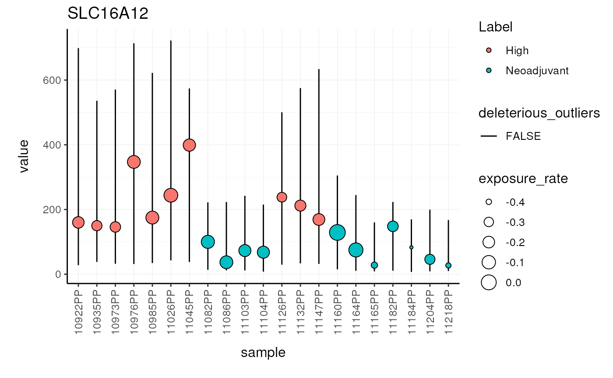

Probabilistic Outlier Identification for RNA Sequencing Generalized Linear Models
Stefano Mangiola
2021-08-31
Source:vignettes/introduction.Rmd
introduction.RmdIntroduction
Relative transcript abundance has proven to be a valuable tool for understanding the function of genes in biological systems. For the differential analysis of transcript abundance using RNA sequencing data, the negative binomial model is by far the most frequently adopted. However, common methods that are based on a negative binomial model are not robust to extreme outliers, which we found to be abundant in public datasets. So far, no rigorous and probabilistic methods for detection of outliers have been developed for RNA sequencing data, leaving the identification mostly to visual inspection. Recent advances in Bayesian computation allow large-scale comparison of observed data against its theoretical distribution given in a statistical model. Here we propose ppcseq, a key quality-control tool for identifying transcripts that include outlier data points in differential expression analysis, which do not follow a negative binomial distribution. Applying ppcseq to analyse several publicly available datasets using popular tools, we show that from 3 to 10 percent of differentially abundant transcripts across algorithms and datasets had statistics inflated by the presence of outliers.
Installation and use
The input data set is a tidy representation of a differential gene transcript abundance analysis
To install:
Before install, for linux systems, in order to exploit multi-threading, from R write:
fileConn<-file("~/.R/Makevars")
writeLines(c( "CXX14FLAGS += -O3","CXX14FLAGS += -DSTAN_THREADS", "CXX14FLAGS += -pthread"), fileConn)
close(fileConn)Multi-threading allows the sampling or variational bayes to share the computation on multiple cores.
Then, install with
if(!requireNamespace("BiocManager", quietly = TRUE))
install.packages("BiocManager")
BiocManager::install("ppcseq")You can get the test dataset with
data("counts")
counts ## # A tibble: 394,821 × 9
## sample symbol logCPM LR PValue FDR value W Label
## <chr> <chr> <dbl> <dbl> <dbl> <dbl> <int> <dbl> <chr>
## 1 10922PP SLC16A12 1.39 41.1 1.46e-10 0.00000274 160 -0.129 High
## 2 10935PP SLC16A12 1.39 41.1 1.46e-10 0.00000274 150 -0.127 High
## 3 10973PP SLC16A12 1.39 41.1 1.46e-10 0.00000274 146 -0.426 High
## 4 10976PP SLC16A12 1.39 41.1 1.46e-10 0.00000274 347 -0.0164 High
## 5 10985PP SLC16A12 1.39 41.1 1.46e-10 0.00000274 175 -0.135 High
## 6 11026PP SLC16A12 1.39 41.1 1.46e-10 0.00000274 244 0.125 High
## 7 11045PP SLC16A12 1.39 41.1 1.46e-10 0.00000274 399 -0.0892 High
## 8 11082PP SLC16A12 1.39 41.1 1.46e-10 0.00000274 100 0.261 Neoadjuvant
## 9 11086PP SLC16A12 1.39 41.1 1.46e-10 0.00000274 37 -0.132 Neoadjuvant
## 10 11103PP SLC16A12 1.39 41.1 1.46e-10 0.00000274 73 0.146 Neoadjuvant
## # … with 394,811 more rowsYou can identify anrtefactual calls from your differential transcribt anundance analysis, due to outliers.
# Import libraries
counts.ppc =
counts %>%
mutate(is_significant = FDR < 0.01) %>%
identify_outliers(
formula = ~ Label,
.sample = sample,
.transcript = symbol,
.abundance = value,
.significance = PValue,
.do_check = is_significant,
percent_false_positive_genes = 5
)The new posterior predictive check has been added to the original data frame
counts.ppc ## # A tibble: 15 × 4
## symbol `sample wise data` `ppc samples failed` `tot deleterious outliers`
## <chr> <list> <int> <int>
## 1 SLC16A12 <tibble [21 × 14]> 0 0
## 2 CYP1A1 <tibble [21 × 14]> 1 1
## 3 ART3 <tibble [21 × 14]> 0 0
## 4 DIO2 <tibble [21 × 14]> 0 0
## 5 OR51E2 <tibble [21 × 14]> 0 0
## 6 MUC16 <tibble [21 × 14]> 0 0
## 7 CCNA1 <tibble [21 × 14]> 0 0
## 8 LYZ <tibble [21 × 14]> 1 1
## 9 PPM1H <tibble [21 × 14]> 0 0
## 10 SUSD5 <tibble [21 × 14]> 0 0
## 11 TPRG1 <tibble [21 × 14]> 0 0
## 12 EPB42 <tibble [21 × 14]> 0 0
## 13 LRRC38 <tibble [21 × 14]> 0 0
## 14 SUSD4 <tibble [21 × 14]> 0 0
## 15 MMP8 <tibble [21 × 14]> 1 1The new data frame contains plots for each gene
We can visualise the top five differentially transcribed genes
counts.ppc_plots =
counts.ppc %>%
plot_credible_intervals() ## [[1]]
##
## [[2]]
## R version 4.1.0 (2021-05-18)
## Platform: x86_64-pc-linux-gnu (64-bit)
## Running under: Ubuntu 20.04.3 LTS
##
## Matrix products: default
## BLAS/LAPACK: /usr/lib/x86_64-linux-gnu/openblas-pthread/libopenblasp-r0.3.8.so
##
## locale:
## [1] LC_CTYPE=en_US.UTF-8 LC_NUMERIC=C
## [3] LC_TIME=en_US.UTF-8 LC_COLLATE=en_US.UTF-8
## [5] LC_MONETARY=en_US.UTF-8 LC_MESSAGES=C
## [7] LC_PAPER=en_US.UTF-8 LC_NAME=C
## [9] LC_ADDRESS=C LC_TELEPHONE=C
## [11] LC_MEASUREMENT=en_US.UTF-8 LC_IDENTIFICATION=C
##
## attached base packages:
## [1] stats graphics grDevices utils datasets methods base
##
## other attached packages:
## [1] ppcseq_0.99.16 dplyr_1.0.7 knitr_1.33 BiocStyle_2.21.3
##
## loaded via a namespace (and not attached):
## [1] matrixStats_0.60.0 fs_1.5.0 httr_1.4.2
## [4] doParallel_1.0.16 rprojroot_2.0.2 rstan_2.21.2
## [7] tensorA_0.36.2 tools_4.1.0 backports_1.2.1
## [10] bslib_0.2.5.1 utf8_1.2.2 R6_2.5.0
## [13] colorspace_2.0-2 ggdist_3.0.0 withr_2.4.2
## [16] tidyselect_1.1.1 gridExtra_2.3 prettyunits_1.1.1
## [19] processx_3.5.2 curl_4.3.2 compiler_4.1.0
## [22] textshaping_0.3.5 cli_3.0.1 arrayhelpers_1.1-0
## [25] desc_1.3.0 labeling_0.4.2 bookdown_0.22
## [28] posterior_1.0.1 sass_0.4.0 scales_1.1.1
## [31] checkmate_2.0.0 callr_3.7.0 pkgdown_1.6.1.9001
## [34] systemfonts_1.0.2 stringr_1.4.0 digest_0.6.27
## [37] StanHeaders_2.21.0-7 rmarkdown_2.10 benchmarkmeData_1.0.4
## [40] pkgconfig_2.0.3 htmltools_0.5.1.1 parallelly_1.27.0
## [43] highr_0.9 fastmap_1.1.0 limma_3.49.4
## [46] rlang_0.4.11 jquerylib_0.1.4 farver_2.1.0
## [49] generics_0.1.0 svUnit_1.0.6 jsonlite_1.7.2
## [52] distributional_0.2.2 inline_0.3.19 magrittr_2.0.1
## [55] loo_2.4.1 Matrix_1.3-4 Rcpp_1.0.7
## [58] munsell_0.5.0 fansi_0.5.0 abind_1.4-5
## [61] furrr_0.2.3 lifecycle_1.0.0 stringi_1.7.3
## [64] yaml_2.2.1 edgeR_3.35.0 pkgbuild_1.2.0
## [67] grid_4.1.0 listenv_0.8.0 parallel_4.1.0
## [70] crayon_1.4.1 lattice_0.20-44 locfit_1.5-9.4
## [73] ps_1.6.0 pillar_1.6.2 codetools_0.2-18
## [76] stats4_4.1.0 rstantools_2.1.1 glue_1.4.2
## [79] evaluate_0.14 V8_3.4.2 BiocManager_1.30.16
## [82] RcppParallel_5.1.4 vctrs_0.3.8 foreach_1.5.1
## [85] gtable_0.3.0 purrr_0.3.4 tidyr_1.1.3
## [88] future_1.21.0 benchmarkme_1.0.7 cachem_1.0.5
## [91] ggplot2_3.3.5 xfun_0.25 coda_0.19-4
## [94] ragg_1.1.3 tibble_3.1.3 iterators_1.0.13
## [97] memoise_2.0.0 globals_0.14.0 tidybayes_3.0.0
## [100] ellipsis_0.3.2